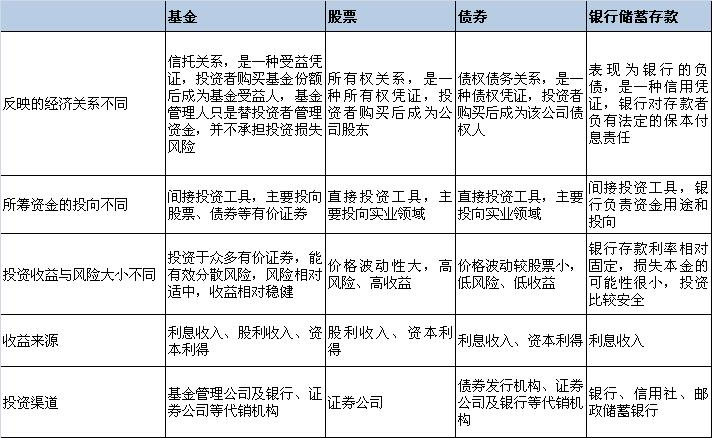

当前位置: 首页 > 投资者权益须知
 投资者权益须知
投资者权益须知
尊敬的基金投资人：
基金投资在获取收益的同时存在投资风险。为了保护您的合法权益，请在投资基金前认真阅读以下内容：
一、基金的基本知识
（一）什么是基金 证券投资基金（简称基金）是指通过发售基金份额，将众多投资者的资金集中起来，形成独立财产，由基金托管人托管，基金管理人管理，以投资组合的方法进行证券投资的一种利益共享、风险共担的集合投资方式。
（二）基金与股票、债券、储蓄存款等其它金融工具的区别
（三）基金的分类
1、依据运作方式的不同，可分为封闭式基金与开放式基金。 封闭式基金是指基金份额在基金合同期限内固定不变，基金份额可以在依法设立的证券交易所交易，但基金份额持有人不得申请赎回的一种基金运作方式。 开放式基金是指基金份额不固定，基金份额可以在基金合同约定的时间和场所进行申购和赎回的一种基金运作方式。
2、依据投资对象的不同，可分为股票基金、债券基金、货币市场基金、混合基金。 根据《证券投资基金运作管理办法》对基金类别的分类标准,60%以上的基金资产投资于股票的为股票基金；80%以上的基金资产投资于债券的为债券基金；仅投资于货币市场工具的为货币市场基金；投资于股票、债券和货币市场工具，但股票投资和债券投资的比例不符合股票基金、债券基金规定的为混合基金。这些基金类别按收益和风险由高到低的排列顺序为：股票基金、混合基金、债券基金、货币市场基金，即股票基金的风险和收益最高，货币市场基金的风险和收益最低。
3、特殊类型基金 （1）系列基金。又被称为伞型基金，是指多个基金共用一个基金合同,子基金独立运作,子基金之间可以进行相互转换的一种基金结构形式。 （2）保本基金。是指通过一定的保本投资策略进行运作，同时引入保本保障机制，以保证基金份额持有人在保本周期到期时，可以获得投资本金保证的基金。 （3）交易型开放式指数基金(ETF)与ETF联接基金。交易型开放式指数基金,通常又被称为交易所交易基金(Exchange Traded Funds,简称“ETF”),是一种在交易所上市交易的、基金份额可变的一种开放式基金。它结合了开放式基金和封闭式基金的运作特点，其份额可以在二级市场买卖，也可以申购、赎回。但是，由于它的申购是用一篮子成份券换取基金份额，赎回也是换回一篮子成份券而非现金。为方便未参与二级市场交易的投资者，就诞生了“ETF联接基金”，这种基金将90%以上的资产投资于目标ETF，采用开放式运作方式并在场外申购或赎回。
（4）上市开放式基金(Listed Open-ended Funds,简称“LOF”)是一种既可以在场外市场进行基金份额申购赎回，又可以在交易所（场内市场）进行基金份额交易、申购或赎回的开放式基金。
（5）QDII基金。QDII是Qualified Domestic InstitutionalInvestors的首字母缩写。它是指在一国境内设立，经该国有关部门批准从事境外证券市场的股票、债券等有价证券投资的基金。它为国内投资者参与国际市场投资提供了便利。
（6）分级基金。是指通过事先约定基金的风险收益分配，将基础份额分为预期风险收益不同的子份额，并可将其中部分或全部份额上市交易的结构化证券投资基金。
（四）基金评级 基金评级是依据一定标准对基金产品进行分析从而做出优劣评价。投资人在投资基金时，可以适当参考基金评级结果，但切不可把基金评级作为选择基金的唯一依据。此外，基金评级是对基金管理人过往的业绩表现做出评价，并不代表基金未来长期业绩的表现。 本公司（行）将根据销售适用性原则，对基金管理人进行审慎调查，并对基金产品进行风险评价。
（五）基金费用 基金费用一般包括两大类：一类是在基金销售过程中发生的由基金投资人自己承担的费用，主要包括认购费、申购费、赎回费和基金转换费。这些费用一般直接在投资人认购、申购、赎回或转换时收取。其中申购费可在投资人购买基金时收取，即前端申购费；也可在投资人卖出基金时收取，即后端申购费，其费率一般按持有期限递减。另一类是在基金管理过程中发生的费用，主要包括基金管理费、基金托管费、信息披露费等，这些费用由基金资产承担。对于不收取申购、赎回费的货币市场基金和部分债券基金，还可按相关规定从基金资产中计提一定的销售服务费，专门用于本基金的销售和对基金持有人的服务。
二、基金份额持有人的权利
根据《证券投资基金法》第70条的规定，基金份额持有人享有下列权利：
（一）分享基金财产收益；
（二）参与分配清算后的剩余基金财产；
（三）依法转让或申请赎回其持有的基金份额；
（四）按照规定要求召开基金份额持有人大会；
（五）对基金份额持有人大会审议事项行使表决权；
（六）查阅或者复制公开披露的基金信息资料；
（七）对基金管理人、基金托管人、基金份额发售机构损害其合法权益的行为依法提起诉讼；
（八）基金合同约定的其它权利。
三、基金投资风险提示
（一）证券投资基金是一种理财工具，其主要功能是分散投资，降低投资单一证券所带来的个别风险。基金不同于银行储蓄和债券等能够提供固定收益预期的金融工具，投资人购买基金，既可能按其持有份额分享基金投资所产生的收益，也可能承担基金投资所带来的损失。
（二）基金在投资运作过程中可能面临各种风险，既包括市场风险，也包括基金自身的管理风险、技术风险和合规风险等。巨额赎回风险是开放式基金所特有的一种风险，即当单个交易日基金的净赎回申请超过基金总份额的百分之十时，投资人将可能无法及时赎回持有的全部基金份额。
（三）基金投资人应当充分了解基金定期定额投资和零存整取等储蓄方式的区别。基金定期定额投资是引导投资人进行长期投资、平均投资成本的一种简单易行的投资方式，但并不能规避基金投资所固有的风险，不能保证投资人获得收益，也不是替代储蓄的等效理财方式。
（四）基金管理人承诺以诚实守信、勤勉尽责的原则管理和运用基金资产，但不保证旗下基金一定盈利，也不保证最低收益。旗下基金的过往业绩及其净值高低并不预示其未来业绩表现。基金管理人提醒投资人基金投资的“买者自负”原则，在做出投资决策后，基金运营状况与基金净值变化引致的投资风险，由投资人自行负担。
（五）本公司（行）将对基金投资人的风险承受能力进行调查和评价，并根据基金投资人的风险承受能力推荐相应的基金品种，但我公司（行）所做的推荐仅供投资人参考，投资人应根据自身风险承受能力选择基金产品并自行承担投资基金的风险。
四、服务内容和收费方式
我公司（行）向基金投资人提供以下服务：
（一）对基金投资人的风险承受能力进行调查和评价。
（二）基金销售业务，包括基金（资金）账户开户、基金申（认）购、基金赎回、基金转换（可选项）、定额定投（可选项）、修改基金分红方式等。我公司（行）根据每只基金的发行公告及基金管理公司发布的其它相关公告收取相应的申（认）购、赎回费和转换费。
（三）基金网上交易服务。
（四）基金投资咨询服务（可选项）。
（五）基金净值、分红提示、交易确认等短信服务（可选项）。
（六）电话咨询、电话自助交易服务（可选项）。
（七）基金知识普及和风险教育。
（以上服务内容涉及收费的，各基金销售机构要明示收费方式）
五、基金交易业务流程
（一） 开立基金账户。如投资者以前未在本公司的任何销售机构开立过基金账户，须首先携有效身份证件和银行借记卡等资料按销售机构规定的手续提出开户申请。
（二） 认购/申购基金。开户成功以后，投资者须按销售机构规定的手续，在开放日的办理时间内提出认购/申购申请，并按销售机构规定的方式全额交付申购款项。销售机构受理投资者的认购/申购申请并不代表该申请一定成功，而仅代表销售机构确实接收到该申请。认购/申购的确认以注册登记机构的确认结果为准。
（三） 设置基金分红方式。对于已经购买的基金，除特别规定了某基金的分红方式以外，投资者可以选择现金分红或将现金分红按权益登记日的基金份额净值自动转购基金份额形式进行再投资（即红利再投资）。
（四） 赎回基金。投资者须按销售机构规定的手续，在开放日的办理时间内提出赎回申请，投资者提交赎回申请时，其在销售机构必须有足够的相应份额类别的基金份额余额，否则所提交的赎回申请无效而不予成交。销售机构受理投资者的赎回申请并不代表该申请一定成功，而仅代表销售机构确实接收到该申请。赎回的确认以注册登记机构的确认结果为准。投资人可通过具有基金代销业务资格的其他机构或我司直销中心购买和赎回基金，基金代销机构名单详见各基金《招募说明书》以及相关公告。具体办理办法请咨询各销售机构,或致电我司客服电话4008-088-088。
（五）网上交易业务流程 我公司网上交易系统支持多银行卡（银行卡的具体明细详见我司网站——http://www.fengrunjf.com），资金的流入流出与银行卡锁定，以保证资金安全。投资者开通网上交易成功后，就可登录该系统办理本公司旗下有关开放式基金的交易及查询等业务。开通网上交易：投资者登录我公司网站：http://www.fengrunjf.com，点击首页“网上交易开户”按钮进入开通网上交易界面。投资者选择网上交易支持的银行卡中的一种，阅读该银行卡开通网上交易的特殊要求和注意事项（包括但不限于银行卡网银签约、浏览器的设置等），同时录入银行卡卡号、选择证件类型、录入证件号码等银行卡的相关资料。银行卡相关资料经银行的接口验证无误后投资者按照开通网上交易向导完成开通网上交易流程。增加银行卡：投资者登录网上交易后使用此功能增加一张新的银行卡，流程与开通网上交易类似。投资者登录网上交易后就可以进行开放式基金的购买、申购、赎回、转换、撤单等交易，还可以查询基金资产和交易历史等。
六、投诉处理和联系方式
（一）基金投资人可以通过拨打我公司客户服务中心电话或以书信、传真、电子邮件等方式，对营业网点所提供的服务提出建议或投诉。对于工作日受理的投诉，原则上当日回复，不能当日回复的，在3个工作日内回复。对于非工作日受理的投诉，原则上在顺延的第一个工作日回复，不能及时回复的，在3个工作日内回复。
（二）基金投资人也可通过书信、传真、电子邮件等方式，向中国证监会和中国证券业协会投诉。联系方式如下：
中国证监会深圳监管局：网址：www.csrc.gov.cn，
联系电话：0755-83263315，
传真：0755-83260010，
电子邮箱：shenzhen@csrc.gov.cn，
地址：深圳市福田区笋岗西路体育大厦东座，邮编：518028。
中国证券投资基金业协会：网址： www.amac.org.cn ，
电子邮箱tousu@amac.org.cn，
地址：北京市西城区金融大街22号交通银行大厦B座9层，邮编：100033。
电话：010-58352888（中国证券投资者呼叫中心）、 www.sipf.com (中国证券投资者保护网)。
（三）因基金合同而产生的或与基金合同有关的一切争议，如经协商或调解不能解决的，基金投资人可提交中国国际经济贸易仲裁委员会根据当时有效的仲裁规则进行仲裁。仲裁地点为基金合同约定的地点。仲裁裁决是终局的，对各方当事人均有约束力。
投资人在投资基金前应认真阅读《基金合同》、《招募说明书》等基金法律文件，选择与自身风险承受能力相适应的基金。我公司（行）和基金管理人承诺投资人利益优先，以诚实信用、勤勉尽责的态度为投资人提供服务，但不能保证基金一定盈利，也不能保证基金的最低收益。投资人可登录中国证监会网站（www.csrc.gov.cn）查询基金销售机构名录，核实我公司（行）基金销售资格。
网址：www.fengrunjf.com
客户服务中心电话：010-82509888
客户服务中心传真：010-82509800
地址：北京市朝阳区酒仙桥路14号兆维工业园C2-2三层
邮编：110016